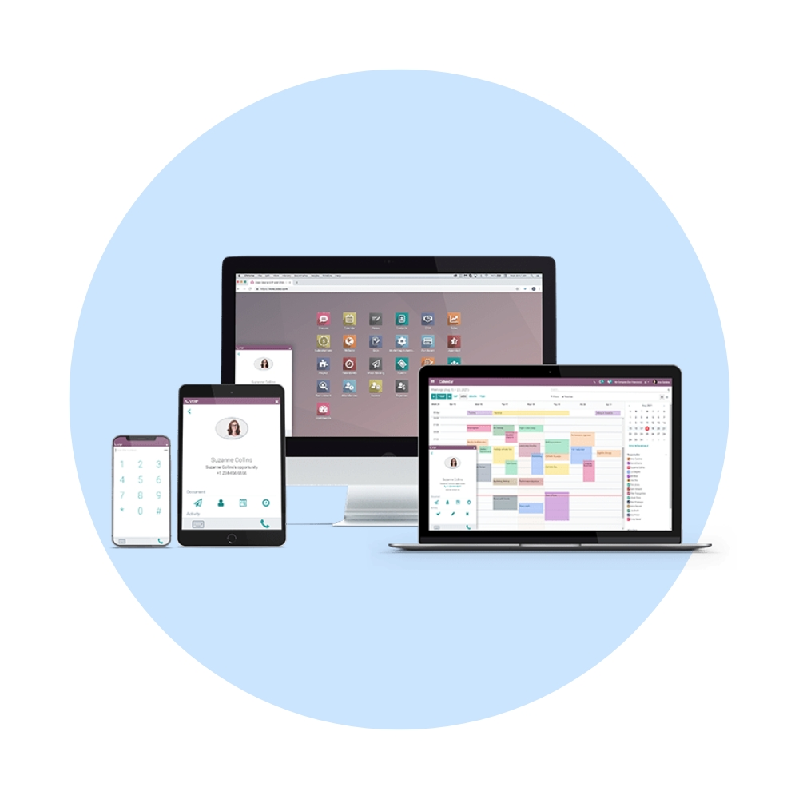
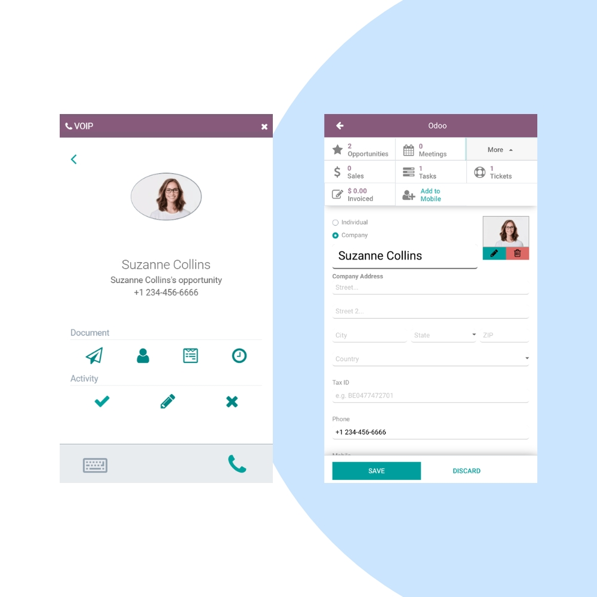
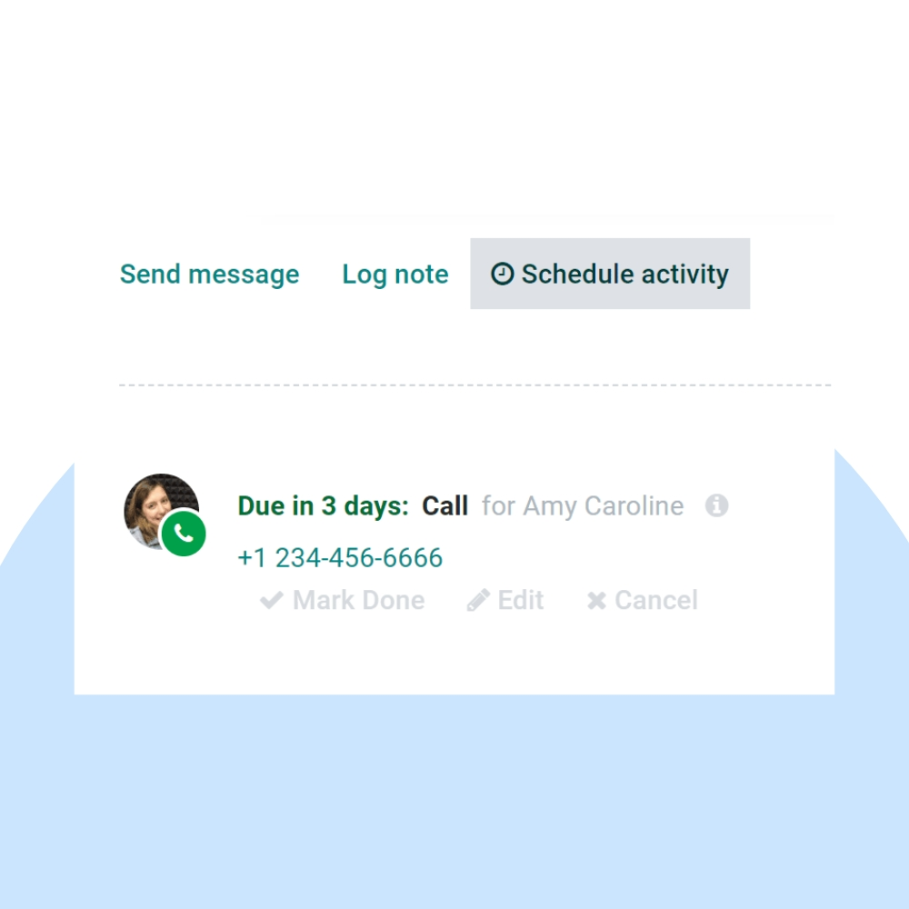

Transform your communication with Odoo VoIP. We help businesses integrate professional telephony directly into their ERP, enabling click-to-dial, automatic call logging, and seamless CRM connectivity.
We configure Odoo VoIP to work with your preferred Asterisk, OnSIP, or Axivox providers. Our team ensures your call queues, dial plans, and softphone interfaces are perfectly optimized for your sales and support teams.


Our implementation team ensures your transition to cloud-based telephony is smooth, providing high-quality voice calls and automatic record-keeping within Odoo.
Call any customer directly from their CRM record.
Every call is automatically logged against the contact.
Instantly see customer details for incoming calls.
Schedule follow-ups directly from the call window.
No desk phone needed—make calls through your browser.
Keep your sales pipeline updated with call insights.
We provide ongoing support to maintain crystal-clear voice quality, manage provider updates, and optimize call analytics for your management team.
